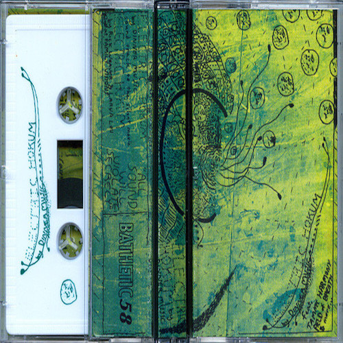
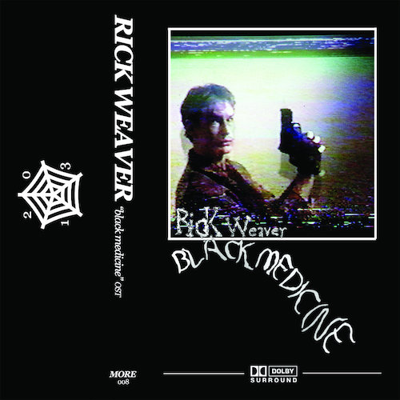

MUSIC RECOMMEND: BILL FRISELL WITH TONY SCHERR AND KENNY WOLLESEN
FAVORITE 25 FILMS OF 2018:
WON'T YOU BE MY NEIGHBOR?
MUSIC REVIEW: MODEL HOME
MODEL HOME 5
FREE WEEK 2019: SHERRY
CHERUBS REVIEW
THE HOUSE THE PREDATORS BUILT: LESSONS FROM HELL
MUSIC REVIEW: BRANDON LOPEZ - quoniam facta sum vilis
MUSIC REVIEW: RANGERS
EUROPE ON TV
50 FAVORITE SONGS: HOUSEFIRE
COPPICE INTERVIEW
2018 FAVORITE LABELS: EHSE RECORDS

CARRAGEENAN INTERVIEW

REVIEW OF HOUSEFIRE "MAGICK MIRROR"
LIVE REVIEW OF X__X
THE BREEDERS LIVE REVIEW
MUSIC REVIEW: NNN COOK - CREASE OR ABYSS
ELTON JOHN LIVE REVIEW
INTERVIEW WITH HAUSU MOUNTAIN
">
BARNEY SMITH, TOILET SEAT ARTIST
INTERVIEW WITH LEMON WEDGE RADIO


![H&S Ranch Radio with Nicki and Rick - In the fourth episode of our Summer trilogy, we dive into the wonderful world of watermelons. Seeds or no seeds, GMO or garden-grown, sliced or whole, watermelons are a refreshing, healthy and fun way to stay hydrated. Watermelons are 17% more hydrating than most things, and our brain-to-rind ratios match up when examined closely. You can bet that when this super fruit is around, you are certain to go from rinds to riches! Indeed, they are the spitting image of good taste. Soundcloud podcast Texas September 2018](assets/img/ranchradio2.png)